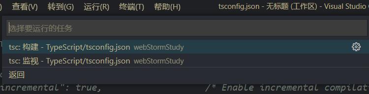

Typescript
# Typescript
# TypeScript 基础
# 1.TypeScript 环境安装与运行
TS---->JS 再交给浏览器运行
# 安装
安装 TS 之前先要安装 NodeJS 和 NPM
通过 npm 安装 TypeScript
//全局安装 typescript npm install -g typescript //校验 typescript tsc -v1
2
3
4tsc 作用：负责将 ts 代码转为浏览器和 nodejs 识别的 js 代码
# 运行
编写 ts 代码 01first.ts
编译 ts--->js
tsc ./01first.ts1运行 js---将 js 文件引入 HTML 页面执行
# 自动编译
自动编译：就是省去程序员敲击命令编译文件，由工具自动完成
设置 VSCode 自动编译
运行
tsc --init 创建tsconfig.json文件1修改 tsconfig.json 文件 设置 js 文件夹："outDir":"./js/"
设置 vscode 监视任务

# 2.TypeScript 变量与数据类型
# 变量
JS：
let 变量名 = 值;
let moAge = 18;
2
TS:
let 变量名: 变量类型 = 值;
let moAge: number = 18;
2
- 在 TS 中，给变量指定类型后，就只能给这个变量设置相同类型的值 否则报错
# 数据类型
原有数据类型
string nunmber boolean Array null undefined Symbol Object1
2
新增类型
tuple元组 enum枚举 any任意类型 never void1
2
# 数组:元素类型 固定 长度不限制
//语法：方式1：let 数组名：类型[]=[值1,至2];
let arrHeros: string[] = ["李白", "诸葛亮", "韩信"];
// 方式2：let 数组名 : Array<类型> = [值1,值2];
let arrHeros: Array<string> = ["李白", "诸葛亮", "韩信"];
let arrJS = [1, "a", true, [], {}];
let arrHeros: string[] = ["李白", "诸葛亮", "韩信"];
let arrHeroAge: number[] = [18, 34, 25];
let arrHeroAge2: Array<number> = [18, 34, 25]; //泛型
2
3
4
5
6
7
8
9
10
# 元组：规定元素数量和每个元素类型的"数组",而每个元素的类型，可以不相同
语法：
//let 元组名:[类型1,类型2,类型3] = [值1，值2，值3]
let tup1: [string, boolean, number] = ["wdnmd", false, 18];
tup1 = ["qiezi", true, 35];
//访问 元组中元素 和长度
tup1.length;
tup1[0];
2
3
4
5
6
# 枚举（enum）:用一组标识来代表数值，方便程序员调用理解
语法：
//枚举项 一般用英文和数字 而枚举值用整型数字
enum 枚举名{
枚举项1 = 枚举值1,
枚举项2 = 枚举值2,
... ...
}
eunm GunType{
M416 =1,
Ak47 =2,
Goza =3
}
//使用默认的枚举值
enum 枚举名{
枚举项1,
枚举项2
...
}
eunm GunType{
M416, //->0
Ak47,//->1
Goza//->2
}
枚举值将自动生成从0开始的数值
2
3
4
5
6
7
8
9
10
11
12
13
14
15
16
17
18
19
20
21
22
23
24
25
# any：代表任意类型，一般在获取 dom 时使用
我们在接收用户输入 或第三方代码库时，还不能确定会返回什么类型的值，此时也可以使用 any 类型
例：
let txtName: any = document.getElementById("txtN");
# viod :代表没有类型，一般用在无返回值的函数
语法：
function sayHi1(): string {
return 'hi,你好呀！'; ----->let result = sayHi1();
}
function sayHi2(): void {
console.log('好啥，wdnmd'); ----> sayHi2();
}
2
3
4
5
6
7
# never:代表不存在的值的类型
常用于作为抛出异常或无限循环的函数返回类型
语法：
function test(): never {
while (true) {}
}
function test2() {
throw new Error("讨厌,死鬼");
}
2
3
4
5
6
补充：never 类型是 ts 中的底部类型，所有类型都是 never 类型的父亲
所以 neverl 类型值可以赋给任意类型的变量
let x: never = test(); let y: string = test();1
2
# 类型推断
- 概念：如果变量的声明和初始化是在同一行，可以省略变量类型的声明
TS：let 变量名 = 值; ----等价于 let 变量名 : 变量类型 = 值;
验证：
let age = 18; 此时变量age的类型被推断为number; age = "moyan"; //报错1
2
3
# 联合类型
概念：表示取值可以为多种类型中的一种
let 变量名: 变量类型1 | 变量类型2 = 值;1eg.接收 prompt 函数的返回值
let dName : string | null = prompt('请输入csgo ID'); console.log("hello" + dName);1
2
# 3.TypeScript 函数
# 返回值和参数
函数 返回值类型
function 函数名(): 返回值类型 { //没有返回值，则定义为void } let 变量名: 变量类型 = 函数名();1
2
3
4函数 形参类型
function 函数名(形参1: 类型, 形参2: 类型): 返回值类型 {} let 变量名: 变量类型 = 函数名(实参1, 实参2);1
2特点
实参和形参的类型要一致
实参和形参的数量要一致
# 可选参数
- 函数 可选参数
function 函数名(形参?: 类型): 返回值类型 {
//可选参数的实参可传，也可不传
}
2
3
调用
可以不传实参 函数名();
可以传递实参 函数名(实参值)；
# 默认值
函数 默认值
形参 1？类型 = 默认值 1带默认值的参数 本身也是可选参数function 函数名(形参1：类型 = 默认值1,形参2:类型 = 默认值2):返回值类型{ }1
2
3调用
不传递实参 函数名(); -------编译后------->函数名(默认值 1，默认值 2);
传递一个实参 函数名(实参 1); -------编译后------->函数名(实参 1，默认值 2);
传递 2 个实参 函数名(实参 1，实参 2); -------编译后------->函数名(实参 1，实参 2);
只传递第 2 个实参 函数名(undefined,实参 2); -------编译后------->函数名(默认值 1，实参 2);
# 剩余参数
函数 剩余参数
function add(形参1: 类型, 形参2: 类型, ...形参3: 类型[]): void { console.log(a + b); }1
2
3特点
剩余参数只能 定义有一个
剩余参数只能 定义为指定类型的数组
剩余参数只能 定义在形参列表的最后
调用
传递 2 个实参 函数名(1,2);
传递 3 个实参 函数名(1,2,4);
传递 2+个实参 函数名(1,2,3,4,5,6,7)
# 4.TypeScript 类
类----批量创建对象
创建对象(类 class - TS)
class City { // 成员变量 cname: string; clevel: number; // 构造函数 constructor(cName: string, cLevel: number) { this.cname = cName; this.clevel = cLevel; } //成员方法 about() { console.log(`兄弟 牛 ${this.cname}都敢跳 这里危险等级为${this.clevel}`);} } 1
2
3
4
5
6
7
8
9
10
11
12
13
14
15调用
// 创建对象 let c1 = new City("p城", 1); console.log(c1.cname); c1.about();1
2
3
4
# 5.数据类封装
# LocalStorage 用于在浏览器端 持久化保存 键值对数据
window 对象-------->LocalStorage 对象
- localStorage 特点
- 大小限制 5M（）chrome 更大数据 可以使用 浏览器本地数据库(indexDB 或 webSql)
- 受同源访问限制，不允许跨域访问
- 在浏览器 隐私模式 下无法使用
- 因为在本地保存，不会发送数据，网络爬虫无法抓取
- 只能存放字符串
localStorage 基本语法
localStorage.setItem("key", "value"); //存放键值对数据
localStorage.getItem("key"); //根据key查询value,没有则返回null
localStorage.removeItem("key"); //根据key删除键值对
localStorage.clear(); //清空所有键值对数据
2
3
4
localStorage 读写对象
保存：
// 1.先将对象转成JSON字符串 然后在保存
let strJson: string = JSON.stringify(对象);
//2.保存json字符串到本地
localStorage.setItem("key", strJson);
2
3
4
读取：
// 1.取出json字符串
let strJson: string | null = localStorage.getItem("key");
// 2.将json字符串 转成对象
let obj = JSON.parse(strJson as string);
2
3
4
# DataHelper 类设计
DataHelper
dataKey -localstroge的键
primaryKey数据项主键名称
constructor-构造函数
readData-读取本地数据 返回数组
addData- 新增数据对象，返回自动生成的id
saveData--存入本地数据
removeDataByid--根据id删除数据对象 返回布尔值
2
3
4
5
6
7
# 6.综合应用
# 搭建 Vue+Ts 脚手架
# 安装
安装vue/cli 操作路径 命令
vue/cli path npm i -g @vue/cli
创建vue项目 path vue create hmmemo
安装vue/typescript path/hmmemo vue add @vue/typescript
安装vuex path/hmmemo npm i vuex
2
3
4
5
# 关闭变量未使用检查
eslint 会对声明单位使用的变量做检查，如果发现报错，造成不必要的麻烦
在package.json文件中 "rules": { "no-unused-vars":0 }1
2
3
4
# 项目结构分析


# 项目代码实现
# 实现步骤
实现整体展示
菜单条-MenuBar.vue
笔记列表-ltemList.vue
Menultem.vue
实现新增
编辑框--MenuEditor.vue
实现删除
实现编辑
按分类显示笔记